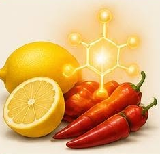

Szent-Györgyi Albert magyar orvos és biokémikus. Szegeden a paprikából sikerült nagy mennyiségben kivonnia a C-vitamint, amelyet korábban hexuronsavnak neveztek.
Munkájáért 1937-ben megkapta az orvosi és élettani Nobel-díjat. A C-vitamin segít az immunrendszer működésében, és hiánya a skorbut nevű betegséget okozza.
← Vissza a főoldalra